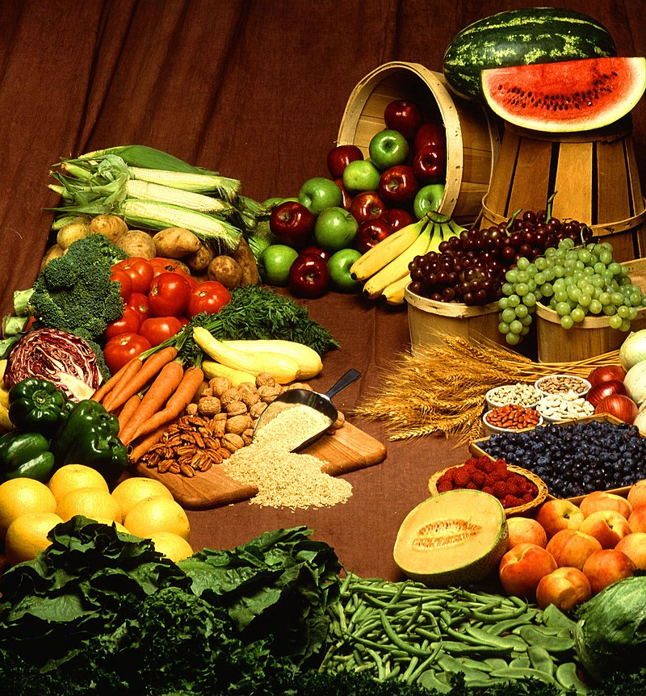

Why

Nutrition is how well you eat.
Nutrition is for Strength,
which is for Health,
which is for Goodness.
So, eat healthfully.
Nutrition is how well you eat.
Nutrition is for Strength, which is for Health, which is for Goodness.
So, eat healthfully.
How
Nourishing
● Conduct ●
Be thankful for any morsel of food at all.
Think of ways to help those without food.
So, find earthly foods to eat.
But, avoid eating in excess.
Share food together, but at times, fast.
Wish for ways to help those without food.
Be hopeful for any morsel of food to come.